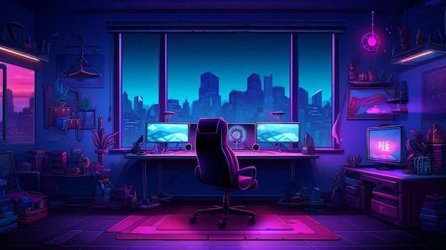
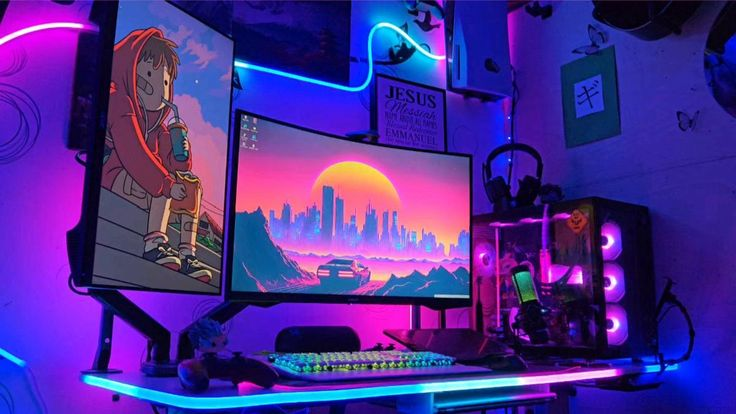

Uma jornada interativa rumo ao conhecimento em desenvolvimento de software.
Introdução
O Jogo da Memória Dev Edition é um projeto especial que combina diversão com aprendizado, focado em ensinar conceitos importantes do mundo do desenvolvimento de software. Este jogo permite aprender termos técnicos de programação enquanto se joga um clássico jogo da memória, transformando o aprendizado em uma experiência interativa e envolvente.
As Tecnologias Web Básicas
HTML: é a estrutura básica do jogo, como o esqueleto de uma construção. Define onde cada elemento ficará posicionado — título, tabuleiro, cartas e informações do jogador.
CSS: responsável pela aparência visual do jogo, funcionando como a decoração e pintura de uma casa. Define cores, fontes, efeitos visuais e garante responsividade.
JavaScript: a inteligência do jogo, gerenciando a lógica, verificação de pares, cronômetro, níveis e embaralhamento das cartas.
Como o Jogo Funciona
O jogo apresenta cartas com conceitos de programação de um lado e definições do outro. O jogador deve encontrar os pares corretos entre termos e explicações.
Conforme o jogador avança, os níveis ficam mais desafiadores, com mais cartas para memorizar. Um cronômetro registra o tempo gasto em cada fase, permitindo acompanhar o progresso e tentar superar recordes.
Cartas com termos técnicos e definições.
Níveis progressivamente mais difíceis.
Cronômetro para medir desempenho.
Aprendizado natural dos conceitos.
Benefícios Educacionais
O jogo transforma o aprendizado técnico em uma experiência lúdica, associando conceitos a uma atividade prazerosa, facilitando a retenção do conhecimento.
A abordagem por níveis permite que iniciantes comecem com conceitos básicos e avancem para temas mais complexos, construindo conhecimento de forma estruturada.
O feedback imediato reforça o aprendizado correto e corrige equívocos em tempo real.

Aplicação e Relevância
Em um mundo cada vez mais digital, entender conceitos básicos de programação é uma habilidade valiosa, mesmo para não desenvolvedores profissionais.
O jogo serve como porta de entrada acessível para esse universo, democratizando o conhecimento técnico.
Educadores podem usar em salas de aula para introduzir tecnologia de forma engajadora, e empresas em treinamentos para funcionários não técnicos.

Conclusão
O Jogo da Memória Dev Edition exemplifica como a tecnologia pode criar experiências educacionais eficazes e agradáveis.
Combinando HTML, CSS e JavaScript, transforma o aprendizado técnico em uma atividade divertida e memorável, provando que educação e entretenimento podem andar juntos.